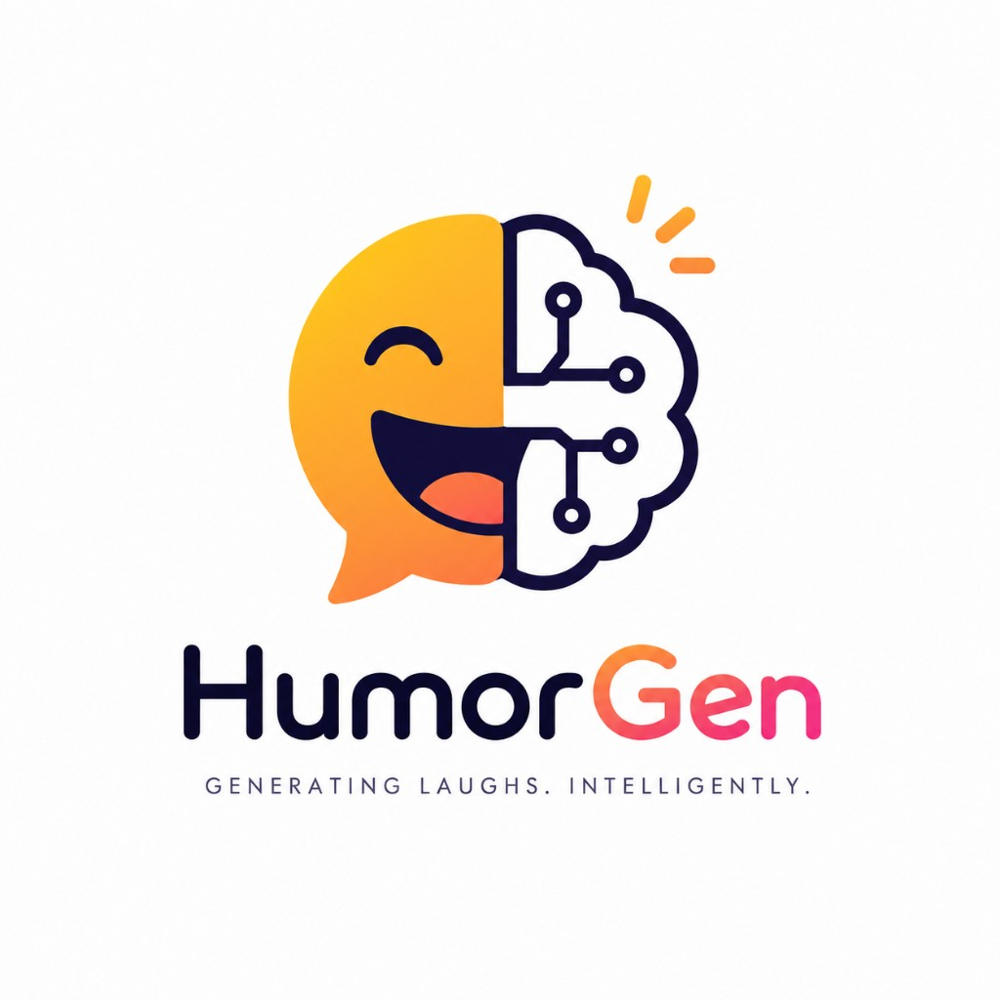

The Neurotic
Superiority — Self-Deprecation
Anxiety, vulnerability, personal insecurity.

HumorGen teaches language models to be genuinely funny — not just to produce text that scans as a joke. Built on the Cognitive Synergy Framework: a Mixture-of-Thought method that distills six comedic personas into a single model.
Standard next-token prediction rewards the most probable continuation. In humor, the most probable output is always the safest, most generic one.
Comedy lives in the unexpected turn of phrase, the precise word that collapses two meanings at once, the observation that makes a situation suddenly absurd. Training a model to "be funny" with a single instruction does not work — it produces outputs that scan as jokes but fail to land.
HumorGen's premise: a single headline supports multiple valid comedic interpretations. Teach the model that diversity, and the laughs follow.
A Mixture-of-Thought method that structures humor generation as an ensemble of six cognitive personas, each grounded in psychological theory.
Rather than a single generation path, CSF produces six parallel candidates per input — one from each persona — creating a diverse pool by construction. The student model is then trained on this data, learning that one headline admits many comedic angles.
Superiority — Self-Deprecation
Anxiety, vulnerability, personal insecurity.
Superiority — Mockery
Hypocrisy and the dark side of social norms.
Incongruity — Relatability
The absurdity hiding in ordinary life.
Incongruity — Linguistic
Phonological ambiguity and double entendres.
Benign Violation
Wholesome misinterpretation.
Incongruity — Surprise
Surreal logic and violated causality.
A strong LLM generates six candidates per headline — one from each persona — building a diverse training pool by construction.
A 7B student (Qwen2.5-7B-Instruct, QLoRA 4-bit, LoRA r/α = 16/16) learns from this diverse pool, with and without Chain-of-Thought traces. Data: SemEval-2026 MWAHAHA + CSF persona traces.
HumorRank — a Bradley-Terry pairwise ranker — scores the persona outputs. DPO (β = 0.1) and O-GRPO (group size 6, full persona slate) teach the model which angle is funniest in context.
Cognitive-driven data curation is far more critical than alignment algorithms or model scale for humor generation. The 7B HumorGen model significantly outperforms larger instruction-tuned baselines and is competitive with state-of-the-art proprietary models.
The CSF isn't limited to open-ended generation. JOKER Task 4 is harder: given a pun word and two required semantic senses, generate a pun-brief — a sentence that satisfies both senses and still reads as funny. The model must navigate strict lexical constraints without losing the laugh.
Domain-agnostic humor pretraining on the SemEval MWAHAHA corpus across all languages, at 14B and 32B scale (Qwen3, QLoRA 4-bit). General-purpose multilingual humor generators — released independently.
A two-stage cross-lingual LoRA curriculum: multilingual pretraining → per-language JOKER fine-tuning for dual-sense pun-briefs in English, French, and Spanish at 14B and 32B.
14 models released as PEFT LoRA adapters on Hugging Face · collection Jayi2424/HumorGen · landing repo Jayi2424/HumorGen. Apache-2.0.
| Model | Training | CoT | Hugging Face |
|---|---|---|---|
HumorGen_SFT_7B | Supervised Fine-Tuning | — | link ↗ |
HumorGen_SFT_Think_7B | SFT + reasoning traces | yes | link ↗ |
HumorGen_DPO_7B | DPO (β=0.1, from SFT) | — | link ↗ |
HumorGen_DPO_Think_7B | DPO (from SFT-Think) | yes | link ↗ |
HumorGen_GRPO_7B | O-GRPO (group 6, from SFT) | — | link ↗ |
HumorGen_GRPO_Think_7B | O-GRPO + CoT · strongest | yes | link ↗ |
Every model is a PEFT LoRA adapter — load the base, apply the adapter, generate.
from transformers import AutoModelForCausalLM, AutoTokenizer
from peft import PeftModel
import torch
tokenizer = AutoTokenizer.from_pretrained("Qwen/Qwen2.5-7B-Instruct")
model = AutoModelForCausalLM.from_pretrained(
"Qwen/Qwen2.5-7B-Instruct", torch_dtype=torch.bfloat16, device_map="auto")
model = PeftModel.from_pretrained(model, "Jayi2424/HumorGen_GRPO_Think_7B")
headline = "Robot passes bar exam; lawyers reassure everyone they are still necessary"
prompt = (
"<|im_start|>system\nThink carefully, then write the best joke you can.\n<|im_end|>\n"
f"<|im_start|>user\n{headline}<|im_end|>\n"
"<|im_start|>assistant\n"
)
inputs = tokenizer(prompt, return_tensors="pt").to(model.device)
outputs = model.generate(**inputs, max_new_tokens=300, temperature=0.7, top_p=0.95)
print(tokenizer.decode(outputs[0], skip_special_tokens=True))from transformers import AutoModelForCausalLM, AutoTokenizer
from peft import PeftModel
import torch
tokenizer = AutoTokenizer.from_pretrained("Qwen/Qwen3-32B")
model = AutoModelForCausalLM.from_pretrained(
"Qwen/Qwen3-32B", torch_dtype=torch.bfloat16, device_map="auto")
model = PeftModel.from_pretrained(model, "Jayi2424/HumorGen_JOKER_EN_32B")
pun_word, sense_1, sense_2 = "bark", "the sound a dog makes", "the outer covering of a tree"
prompt = (
"<|im_start|>system\nYou are an expert at writing puns. Given a pun word and two "
"meanings, write a sentence that uses both senses naturally.\n<|im_end|>\n"
f"<|im_start|>user\nPun word: {pun_word}\nSense 1: {sense_1}\nSense 2: {sense_2}\n<|im_end|>\n"
"<|im_start|>assistant\n"
)
inputs = tokenizer(prompt, return_tensors="pt").to(model.device)
outputs = model.generate(**inputs, max_new_tokens=80, temperature=0.8, top_p=0.95)
print(tokenizer.decode(outputs[0], skip_special_tokens=True))Ajayi, E. et al.
arxiv.org/abs/2604.09629 ↗Ajayi, E. et al. · SaLT Lab, Carnegie Mellon University
View PDF ↗@misc{ajayi2026humorgen,
title = {HumorGen: Cognitive Synergy for Humor Generation in Large Language
Models via Persona-Based Distillation},
author = {Ajayi, Edward and others},
year = {2026},
eprint = {2604.09629},
archivePrefix = {arXiv},
primaryClass = {cs.CL},
url = {https://arxiv.org/abs/2604.09629}
}@inproceedings{ajayi2026joker,
title = {Cross-Lingual Cognitive Synergy for Constrained Humor Generation
in LLMs: SaLT Lab at the CLEF 2026 JOKER Track},
author = {Ajayi, Edward and others},
booktitle = {Working Notes of CLEF 2026},
year = {2026},
url = {https://edwardajayi.github.io/assets/papers/HumorGen-JOKER.pdf}
}